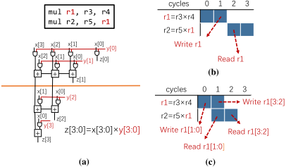
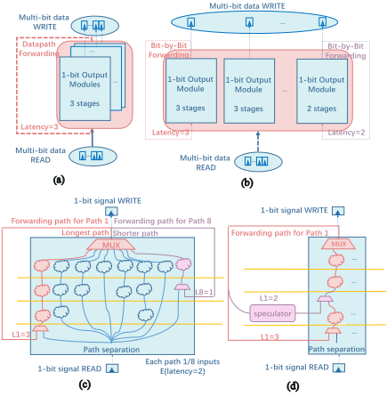
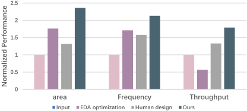

Revisiting Automatic Pipelining: Gate-level Forwarding and Speculation
重新审视自动流水线：门级前递（Forwarding）与推测（Speculation）
简介
论文针对传统流水线 interlock 机制（stalling/forwarding/speculation）只在算子或数据字粒度做 RAW 依赖分析、按最长路径决定数据可用时间，从而产生大量冗余流水线停顿的问题，提出在门级网表粒度重新做自动流水线优化。方法上先用线性复杂度贪心算法把短延迟信号路径的逻辑门尽量装配到靠后的相邻流水级，使早期流水级只剩导线、可被门级前递路径（带 MUX 控制）旁路；对残留少量逻辑的早期级，再用基于 Decision Tree 的 program-by-example 方法近似综合 speculator，并将流水线时序展开成布尔表达式后用 SMT 求解器 Gimsatul 做形式验证，保证流水线结果与单周期电路等效。在 ISCAS85/EPFL 基准与 RISCV-32I CPU 上，吞吐率较 state-of-the-art 自动流水线方法提升 1.57×，平均比人类专家设计好 31%；多功能电路场景以 5.5% 面积开销消除 78.7% 冗余气泡、吞吐率提升 9%。该工作展示了门级信息驱动的流水线自动化与形式等效验证结合的完整可行路径。
问题
传统流水线设计（人工设计与自动流水线）在算子/数据字粒度分析 RAW 依赖，假设数据字所有位同时到达、按最长路径确定停顿周期，前递与推测因此过于保守，产生大量冗余流水线停顿；现有自动流水线方法依赖高层人工知识与规则分析，无法利用门级网表结构信息进一步消除这些停顿。
方法
提出门级前递与门级推测：1) 以线性复杂度贪心遍历网表，按每个门到输出的最长路径编号，在满足流水级延迟约束下将逻辑门贪心装配到尽可能靠后的流水级，使短延迟路径的早期流水级不含逻辑，可用门级前递路径旁路；2) 对未完全旁路的早期级，用 Decision Tree 基础的 program-by-example 方法近似拟合含全部真实执行结果的软件模拟器生成 speculator；3) 将流水线设计时序展开，以 (C_out ≡ C_in)(C_stall = 0) 的形式交由 SMT 求解器 Gimsatul 做形式验证，验证不通过则采样更多例子迭代，实现 correct-by-construction。
关键结果
在 ISCAS85/EPFL 与 RISCV-32I CPU 基准上，流水线吞吐率较 state-of-the-art 自动流水线方法提升 1.57×，平均比人类设计者好 31%
单功能电路：消除超过一半的冗余流水线停顿，仅 3.6% 额外面积开销使平均吞吐率优化 10%；其中一个案例吞吐率提升 45% 且无额外面积开销
多功能电路：消除 78.7% 冗余气泡，仅 5.5% 额外面积开销使平均吞吐率优化 9%
理论分析：单功能电路中 1/11 ISCAS 案例与 7/20 EPFL 案例的高层依赖分析不够高效（>1% 吞吐损失），平均有 41% 潜在吞吐优化空间；多功能电路中 11/11 ISCAS 与 19/20 EPFL 案例存在平均 14% 的潜在吞吐优化空间
与 EDA 优化（如 retiming）及人工设计对比：所提方法取得最高频率（1.87×）与最高平均吞吐率（1.57×）；38 个案例中 25 个由该方法取得最佳吞吐率，人工设计在 13 个案例中最佳
基准规模从数千到超过 230,000 个 AIG 节点（平均 14,401，最大 EPFL-hyp 为 232,134）
创新点
以往自动流水线方法（架构级、HLS、电路级）与 interlock 机制均基于高层 dataflow 分析或人工规则，假设数据字各位同时到达；本文首次在门级网表粒度做 RAW 依赖分析，利用'短延迟信号路径可装配进更少相邻流水级、无逻辑流水级可被前递旁路'的观察挖掘高层分析看不到的优化空间。推测器也不同于此前沿用执行轨迹预测的方式，而是用 DT-based PBE 从软件模拟器样本近似综合，并以 SMT 形式验证兜底正确性。
团队参考意义
相关度级别：high
命中能力域：2.2 RTL 设计与实现 | 2.5 形式验证与等效性检查 | 2.7 EDA/验证自动化与 AI 辅助
理由：论文直接命中三个能力域核心技术：2.2（自动流水线/流水线切分是团队 RTL 实现的核心日常工作，本文给出延迟约束驱动的自动化流水级划分与前递插入方法）；2.5（将流水线展开后用 SMT 求解器对流水线化设计与单周期参考电路做形式等效验证，与团队的 LEC/SEC 与形式化能力直接对应）；2.7（自动流水线 EDA 流程自动化、DT/PBE 等 AI 辅助电路综合，契合团队沉淀可复用方法学与自动化能力的定位）。团队的高速存储/互连 IP 数据通路普遍存在多级流水与反馈 RAW 路径，人工做位级前递优化成本高，该方法提供了自动化替代思路与形式化兜底手段。
建议动作：深入精读并做内部分享
中文全文
Revisiting Automatic Pipelining: Gate-level Forwarding and Speculation
重新审视自动流水线化：门级前递与推测
Shuyao Cheng 1, 2, 3, Chongxiao Li 1, 2, 3, Zidong Du 1, 4, Rui Zhang 1, ∗, Xing Hu 1, 4, Xiaqing Li 1, Guanglin Xu 1, Yuanbo Wen 1, Qi Guo 1, ∗
chengshuyao19z,lichongxiao21s,duzidong,zhangrui,huxing,lixiaqing,xuguanglin,wenyuanbo,guoqi@ict.ac.cn 1 中国科学院计算技术研究所处理器全国重点实验室 2 中国科学院大学 3 寒武纪科技 4 上海处理器技术创新中心
ABSTRACT
流水线化（Pipelining）是一种被广泛应用的微体系结构性能优化手段，需要非平凡的设计才能获得更好的执行吞吐率。流水线吞吐率优化的关键在于解决由先写后读（read-after-write, RAW）相关所导致的数据冒险，这类冒险传统上通过前递（forwarding）和推测（speculation）来处理，以避免流水线停顿。然而，现有方法基于高层数据流分析进行，由于缺乏对网表结构的分析，可能会损失优化机会。
进一步提升流水线吞吐率。即使门级设计空间十分庞大，通过将短延迟信号路径中的逻辑门装配到更少的相邻流水线级中，前递路径和推测器能够旁路无效的流水线级，从而掩盖这些路径的延迟。我们在广泛使用的 ISCAS/EPFL 基准电路上以及一款大规模 RISC-V CPU 上开展了实验，我们的方法能够找到比人类专家更好的设计。
我们提出了一种通过门级前递与推测、基于低层网表分析来解决 RAW 相关的高效方法。该方法采用贪心搜索方法来检测并化解用于前递的短延迟门级信号路径，并采用带形式化验证的近似电路综合方法来实现门级推测，从而高效地利用门级信息以
1 INTRODUCTION
流水线化（Pipelining）是提升数字电路计算吞吐量的一项关键且被广泛采用的技术 [21, 25]。在流水线设计中，数据通路被分解为多个由触发器连接的级，使得多周期计算的执行能够在时间上相互重叠，从而隐藏延迟。尽管理想的流水线在稳态下能够在每个时钟周期完成一次计算，但在化解计算之间潜在的写后读（RAW）数据相关时，其速度可能会下降。为了尽量减少由数据相关引起的流水线停顿，人们为现代流水线处理器设计开发了涉及停顿、数据前递和推测的流水线互锁机制 [26]。
在本文中，我们认为以算子粒度设计的传统流水线互锁机制忽视了进一步减少流水线停顿的机会。这些机制既包括人工设计实践，也包括自动流水线化技术 [21]。在算子

本作品根据知识共享署名 4.0 国际许可协议（Creative Commons Attribution 4.0 International License）授权。DAC '24，2024 年 6 月 23–27 日，美国加利福尼亚州旧金山 © 2024 版权归所有者/作者所有。ACM ISBN 979-8-4007-0601-1/24/06. https://doi.org/10.1145/3649329.3657352

粒度下，被处理数据字的可用性是原子性地确定的，取决于最长路径所产生的信号位的可用性 [14, 18, 20]。在数据前递中，会在产生数据的流水线级与相应的消费级之间为整个数据字构建一条反馈路径 [20]。在数据推测中，具有相关性的数据字会借助已有的执行轨迹进行预测 [8, 15, 23]。简而言之，传统方法假设数据字的所有信号位从所有门级信号路径同时到达，在计算所需流水线停顿周期时表现得过于保守，因而无法发掘出电路设计的最佳性能。
我们观察到，在基于高层数据流分析的传统流水线设计中存在大量冗余的流水线停顿，而这些冗余停顿可以通过门级分析加以化解。图 1 展示了门级吞吐量优化的一个简化示例，其中图 1(a) 包含某 CPU 设计中的一个 4 位乘法器，两条连续指令之间存在 RAW 相关。具体而言，橙色虚线为流水线级边界。较低的两个输出位 z[1:0] 在第一级中由输入信号 x[1:0] 和 y[1:0] 计算得到，而 z[3:2] 则在第二级中由 x[3:0] 和 y[3:2] 计算得到。由于 z 与 y 之间存在 RAW 相关，在高层分析中，同一数据的所有信号（例如 z 和 y）具有相同的前递路径，并且必须停顿直至所有位 y[3:0] 都被计算出来，如图 1(b) 所示。然而，在门级分析中，输出位 z[1:0]
可以更早地前递到输入 y[1:0]，随后输出位 z[3:2] 可以被前递到输入 y[3:2]；流水线无需停顿。通过门级前递，网表结构掩盖了写后读（RAW）延迟，从而提升了流水线吞吐率。
为此，我们提出了一种通过门级前递与推测来化解 RAW 相关的高效门级流水线吞吐率优化方法。其关键洞察在于：在门级分析中，一条高层级数据通路在网表中被拆分为多条独立的门级信号路径，其中某些短延迟路径的延迟可以被降低。通过将短延迟信号路径中的逻辑门装配到更少的相邻流水线级中，前递路径得以绕过无效的流水线级，从而掩盖延迟。对于门级前递，所提方法以贪心方式将短延迟路径中的逻辑门装配到尽可能靠后的流水线级，同时为短延迟路径构建门级前递路径，使其绕过无效的前端流水线级。对于门级推测，所提方法根据包含所有实际执行结果的软件仿真器，使用决策树（Decision Trees）并结合形式化验证来近似地设计推测器。
尽管潜在的吞吐率提升十分明显，但基于门级分析来优化流水线仍然充满挑战。网表虽然经过仅含数十个节点的高层数据流分析，却可能包含数千个门和信号路径，从而形成极其庞大的探索空间。如此庞大的探索空间对现有流水线设计方法在门级上的直接应用构成了重大障碍。具体而言，对人类专家而言，几乎不可能从缺乏可读性的网表中化解门级冒险。同一寄存器传输级（RTL）代码的不同网表在门级优化中会被以不同方式优化，因此高层级的人类知识难以高效地用于进一步的门级优化。对于自动化方法而言，广泛使用的基于规则的演绎方法同样依赖高层级的人类知识，无法在所提优化上取得良好效果。例如，架构级自动流水线方法 [3, 5, 9]、高层次综合（High-level Synthesis）[1, 6, 16, 19] 以及电路级方法 [10, 13, 22]，只能优化具有前馈逻辑的电路部分，或基于高层级的人工设计规则来分析 RAW 相关。
所提方法在多种电路上进行了实现与评估，包括标准电路基准测试集 ISCAS85/EPFL 以及一款 RISCV-32 CPU 设计。实验结果表明，该方法能够将流水线吞吐率提升 1.57×，优于最先进的自动流水线方法。更重要的是，借助细粒度的门级设计空间，我们的方法能够找到比人类设计者平均好 31% 的流水线设计。
总而言之，本文的主要贡献如下：
最先进的自动流水线优化方法。更重要的是，凭借细粒度的设计空间，我们的方法能够找到比人类设计者更好的流水线设计。
2.1 Automatic Pipelining
自动流水线可以显著减少构建高性能时序电路所需的人力投入。它通过从单周期输入规范（如 C 或寄存器传输级（RTL）代码）生成流水线电路来实现这一点，从而提升吞吐率。其研究与应用贯穿电路设计流程的各个阶段。TurboSYN 被提出用于通过重定时和流水线化来最小化时序电路的时钟周期 [4]。对于不存在潜在数据冒险的前馈电路，自动流水线已被用于优化时钟周期约束，并且已被应用于专用集成电路（ASIC）和现场可编程门阵列（FPGA）设计流程中 [13, 17, 22]。然而，由于写后读（RAW）冒险的存在，将自动流水线应用于带环路的电路会带来更为显著的挑战。当前的流水线方法通过基于依赖性分析的异步数据前递来优化延迟不敏感电路（也称为数据流电路或弹性系统）的吞吐率。由于这种依赖性分析依赖于人类知识——无论是通过人工对数据流进行分析 [5, 9]，还是通过用于自动代码分析的手工规则 [1, 6, 16, 27]——这些方法都未能纳入具体的门级设计结构细节。因此，当前的自动流水线方法无法探索拥有更多网表信息的门级设计空间。
2.2 Program-by-Example Circuit Synthesis
示例编程（Program-by-Example, PBE）是归纳式程序综合中的一种方法，其目标是仅依据输入-输出示例来构造满足规约的程序[11]。PBE 在电路综合中的应用日益增多，用于自动生成满足设计需求的网表。这结合了电子设计自动化（EDA）与机器学习的技术。用于电路综合的常见 PBE 技术主要分为四类，即决策树、启发式搜索、模拟退火和神经网络[2, 11, 12, 24]。此外，近年来还出现了一些 EDA 竞赛，展示了 PBE 在若干 EDA 案例上的应用。在 2019 年 ICCAD 竞赛中，Problem A 是一道 PBE 赛题，展示了其在自动化工程变更单（ECO）、逻辑综合以及模型检测问题中的应用 [12]。在 2020 年 IWLS 竞赛中，存在针对算术电路乃至图像检测等复杂案例的 PBE 问题 [24]。然而，现有 PBE 方法在达到足够高的精度、或实现构造即正确（correct-by-construction）电路综合所需的形式化验证方面存在局限。目前的研究工作旨在改进 PBE 技术，以实现更鲁棒、更可验证的基于示例的电路综合。
3.1 Overview: Gate-level RAW Optimization
在庞大的门级设计空间中进行依赖性分析极具挑战性，无法依靠传统的高层次人类知识来完成。我们提出一种高效的方法，利用门级前递（gate-level forwarding）与推测（speculation）来解决写后读（RAW）依赖。通过将短延迟路径的逻辑门组装到更少的相邻流水线级中，延迟得以降低。
在图 2(c) 中，门级前递更加具体地分析信号路径。由于信号复用或多扇出逻辑门的存在，一条单比特路径在网表中可能会分离成多条不同的信号路径，而短延迟信号路径同样可以采用相同的思想进行优化。我们在图中展示了一个包含 8 条路径的示例，每条路径仅对 1/8 的可能输入有效。逻辑门用云状图形表示。其中一些路径（例如 Path 1，即左侧的红色路径）延迟较长，受时钟周期延迟约束的限制，必须映射到全部三个流水线级中；而短延迟路径（例如 Path 8，即右侧的紫色路径）则可以仅组装在一个流水线级中，而不会违反任何延迟约束。如果 Path 8 的所有逻辑门都组装在最后一级，那么不含逻辑门的前两级仅由连线构成，可以通过前递加以旁路。Path 8 的延迟因此降为 1。于是，所有路径的期望延迟可计算为 𝐸 ( 𝐿 𝑏𝑖𝑡 ) = 8 𝑖 = 1 𝑃 𝑖 × 𝐿 𝑖 = 2。

基于门级前递与推测所带来的高效优化，简单直接的算法便足以设计出吞吐率优于人类设计者的流水线。若采用更具体的启发式算法进行设计空间探索，设计质量还可以进一步提升，但这并非本文的主要考量。
在图 2(d) 中，推测器（speculator）可以进一步优化短延迟路径的信号路径延迟。即使在后级完成组装之后，某些前级中仍残留少量逻辑门而未被完全旁路，这些逻辑也可以被提取到推测器中，以便在实际执行之前预测执行输出。前级中的这些短延迟逻辑无需额外消耗一个周期来进行计算，而是与推测器一起被组装到下一个流水线级中，从而进一步降低信号路径延迟。
3.2 Gate-level Signal Forwarding
我们提出了一种线性复杂度的方法，能够充分找到优于高层次人工设计的门级转发（gate-level forwarding）。首先，算法遍历原始网表（netlist），并为每个门编号，编号依据是从该门到输出信号的最长路径。由于原始电路是单周期电路，该编号可以通过贪心遍历算法以线性复杂度完成。其次，在满足流水线设计延迟约束的前提下，根据这些编号贪心地依次将各个门组装到尽可能靠后的流水线级中。这样，对于较短的路径，逻辑门在较后的级中更为密集。即使某些门可以被映射到较早的级（因为它们也可能是某条长路径的一部分），该特定较短路径的较早级中也几乎没有逻辑。借助门级转发与推测，该特定较短路径的较早级可以被旁路，从而通过门级分析隐藏环路延迟，如图 2 所示。至此，流水线级边界得以确定，并且可以预先从输出信号向每个较早级插入门级转发路径，并用一个 MUX 来控制每个信号是否需要转发。对于每条信号转发路径，若某个特定流水线级之前的所有较早级均无效，则后续所有流水线级都将采用被转发的信号，以旁路所有较早级。
3.3 Gate-level input speculation
即使短路径的某些较早级并非完全无效，其剩余的逻辑门也很少；这些流水线级同样可以通过一个包含剩余简单逻辑的推测器（speculator）来旁路。
随后，我们采用一种基于决策树（Decision-Tree, DT）的示例编程（program-by-example, PBE）方法，利用有效信号（包括流水线输入信号和快速转发的信号）对仿真器进行近似拟合。推测器先通过基于 DT 的方法进行初步编程（如本论文[24]中所述），并可通过 SMT 求解器进行形式化验证，以保证其功能正确性。尽管推测器是基于近似算法设计的，但只要它通过了形式化验证，就无需为纠错付出额外的面积/吞吐量开销。如果初步设计无法通过验证，PBE 方法会采样更多示例，以获得更精确的设计。在进行形式化验证时，我们展开流水线设计，单周期电路可以用布尔表达式表示，以供 SMT 求解器处理。输入的单周期非流水线电路与流水线设计的时序展开电路可相应地表示为 𝐶 𝑖𝑛 和 𝐶 𝑜𝑢𝑡。转发与推测器控制器的流水线停顿信号是一个单周期函数，可表示为 𝐶 𝑠𝑡𝑎𝑙𝑙。所设计流水线唯一可能的错误是：对于被转发或被推测的输入，它没有停顿，而在仿真器中它本应停顿。否则，流水线的执行结果将与单周期电路不同。因此，该设计的形式化验证可以表述为 ( 𝐶 𝑜𝑢𝑡 ≡ 𝐶 𝑖𝑛 ) ( 𝐶 𝑠𝑡𝑎𝑙𝑙 = 0 )，并由 SMT 求解器加以验证。
首先，我们进行软件仿真，以确定执行过程中的所有内部信号，包括流水线是否需要停顿。为了仿真一个 n 级流水线，仿真器会仿真后续 n 个周期的执行结果，并判断在不加入流水线停顿的情况下是否会引入错误。只有当流水线设计计算出的结果与输入单周期电路的结果不同时，流水线才需要停顿并等待 RAW 信号写回。因此，从理论上讲，该仿真器消除了所有冗余的流水线停顿。遗憾的是，由于仿真器是通过仿真来使用未来信息的，它无法以硬件形式实现。
4 EVALUATION
本文提出的方法在多种规模的常用 EDA 基准电路上进行评估，包括 ISCAS 85 和 EPFL 电路，以及一个定制的真实场景 RISCV-CPU 基准电路。RISCV-CPU 基准电路由完整的 RISCV-32I CPU 设计以及整个 CPU 系统的部分组件构成。具体而言，该基准电路包括 32 位 INT 加法器、32 位 INT 乘法器、32 位 FP 加法器、32 位 FP 乘法器、程序计数器（PC）、多功能算术逻辑单元（ALU）以及完整的 RISCV-32I CPU。电路规模以 Yosys 编译生成的与非图（And-Inverter Graph, AIG）表示中的节点数量来衡量，范围从数千个节点到超过 230,000 个节点。基准电路的平均规模为 14,401 个 AIG 节点，而最复杂的电路 EPFL-hyp 包含 232,134 个 AIG 节点。基准电路中的功能电路被集成到真实场景的数据流中，以应对典型的 RAW 情况。
我们的流水线化方法运行于 CentOS 7.8 系统，配备 2 个 Intel Xeon Gold 6230 CPU 和 512G 内存。我们使用 Gimsatul [7] 作为 SMT 求解器来对设计进行形式化验证。ASIC 实验中的软件基于 65nm 工艺库。实验性能通过电路吞吐量、每输入时间（time per inputs, TPI）或每输入周期数（cycle per inputs, CPI）来衡量。电路吞吐量通过在流水线上运行随机的 10,000 周期数据流来计算。
4.1 Gate-level RAW optimization Necessity
表1报告了采用高层次分析与门级分析两种方式的同一流水线结构的面积与吞吐量。我们比较了最优高层次流水线设计（Human）与根据仿真器得到的理论上吞吐量最优的门级设计（Simu.）的流水线吞吐量。结果表明，门级相关性分析为流水线吞吐量优化提供了更多机会。在ISCAS的1/11个用例和EPFL的7/20个用例中，高层次相关性分析在理论上不够高效（相比Simu.吞吐量损失超过1%），平均存在41%的潜在吞吐量优化空间。在其他用例中，门级设计与数据通路级设计具有相同的吞吐量。我们进一步在更接近真实设计场景的多功能电路上对该功能进行评估。当另一个功能网表与基准电路并行时，长延迟路径与短延迟路径之间存在更多差异。结果表明，多功能网表比单功能电路具有更大的门级优化潜力。在ISCAS的全部11个用例和EPFL的19/20个用例中，数据通路级设计在理论上不够高效（相比Simu.吞吐量损失超过1%），平均存在14%的潜在吞吐量优化空间。
遗憾的是，理论上最优的门级流水线Simu.是不现实的，因为它需要使用软件仿真器的精确执行结果来决定流水线是否必须停顿。
4.2 Forwarding/Speculation Efficiency
我们评估了所提方法在利用这些潜在门级优化方面的效率。表1报告了采用门级前递与推测的所提方法（Ours）的面积与每指令周期数（CPI），以及相对于理论最优设计（Simu.）的优化率（Rate），结果表明所提方法能够以有限的面积开销有效提升流水线吞吐量。在单功能用例中，所提方法可消除一半以上可能出现的冗余流水线停顿。仅以3.6%的额外面积代价，流水线平均吞吐量即获得10%的优化。
| single-function cases..case | single-function cases.Human.area | single-function cases.Human.CPI | single-function cases.Ours.area | single-function cases.Ours.CPI | single-function cases.Simu..CPI | single-function cases..Rate |
|---|---|---|---|---|---|---|
| ISCAS/c2670 | 7972 | 1.67 | 8570 | 1.56 | 1.53 | 77.6% |
| EPFL/bar | 11740 | 2.41 | 13038 | 2.28 | 2.27 | 96.3% |
| EPFL/div | 67153 | 2.07 | 67153 | 2.07 | 1.03 | 0.00% |
| EPFL/i2c | 8685 | 2.42 | 9989 | 1.89 | 1.87 | 99.8% |
| EPFL/int2float | 1566 | 1.62 | 1605 | 1.53 | 1.47 | 60.3% |
| EPFL/priority | 2954 | 2.00 | 2954 | 2.00 | 1.00 | 0.00% |
| EPFL/router | 5659 | 1.45 | 5511 | 1.00 | 1.00 | 100% |
| EPFL/sqrt | 32105 | 2.38 | 32139 | 2.38 | 1.98 | 0.00% |
| EPFL/voter | 16499 | 1.97 | 16562 | 1.74 | 1.04 | 20.1% |
| Average | 100% | 100% | 103.6% | 90.2% | 71.0% | 50.45% |
| Average throughput | 1 × | 1 × | 1.10 × | 1.10 × | 1.41 × | |
| multi-function cases | multi-function cases | multi-function cases | multi-function cases | multi-function cases | multi-function cases | multi-function cases |
| ISCAS/c1355 | 6775 | 1.98 | 6890 | 1.80 | 1.80 | 100% |
| ISCAS/c17 | 5868 | 1.98 | 5984 | 1.80 | 1.80 | 100% |
| ISCAS/c1908 | 6712 | 1.99 | 6826 | 1.81 | 1.81 | 100% |
| ISCAS/c2670 | 8917 | 2.38 | 13327 | 2.13 | 2.13 | 99.3% |
| ISCAS/c3540 | 7608 | 1.98 | 7722 | 1.80 | 1.80 | 100% |
| ISCAS/c432 | 6364 | 1.98 | 6460 | 1.80 | 1.80 | 100% |
| ISCAS/c499 | 6791 | 1.99 | 6906 | 1.80 | 1.80 | 100% |
| ISCAS/c5315 | 9680 | 2.38 | 11327 | 1.95 | 1.95 | 98.8% |
| ISCAS/c6288 | 8844 | 1.99 | 8958 | 1.81 | 1.81 | 100% |
| ISCAS/c7552 | 10713 | 2.40 | 11900 | 2.19 | 2.19 | 100% |
| ISCAS/c880 | 6901 | 1.99 | 7015 | 1.81 | 1.81 | 100% |
| EPFL/adder | 9614 | 2.40 | 10774 | 2.18 | 2.18 | 100% |
| EPFL/arbiter | 23899 | 2.39 | 25062 | 2.17 | 2.17 | 99.9% |
| EPFL/bar | 11262 | 2.39 | 12650 | 2.19 | 2.13 | 77.0% |
| EPFL/cavlc | 7001 | 1.98 | 7134 | 1.79 | 1.79 | 100% |
| EPFL/ctrl | 6233 | 1.99 | 6402 | 1.81 | 1.81 | 100% |
| EPFL/dec | 8151 | 2.39 | 8764 | 2.12 | 1.87 | 61.4% |
| EPFL/div | 68295 | 2.40 | 68295 | 2.40 | 1.63 | 0.00% |
| EPFL/i2c | 10023 | 2.40 | 13327 | 2.10 | 2.10 | 100% |
| EPFL/int2float | 6340 | 1.99 | 6458 | 1.82 | 1.82 | 100% |
| EPFL/log2 | 46296 | 1.98 | 46407 | 1.62 | 1.62 | 100% |
| EPFL/max | 12729 | 2.40 | 12841 | 2.34 | 2.15 | 19.9% |
| EPFL/multiplier | 37073 | 2.40 | 38236 | 2.19 | 2.19 | 100% |
| EPFL/priority | 7164 | 1.97 | 7164 | 1.97 | 1.65 | 0.00% |
| EPFL/router | 6445 | 2.00 | 6445 | 2.00 | 1.54 | 0.00% |
| EPFL/sin | 14016 | 1.98 | 14180 | 1.80 | 1.80 | 99.8% |
| EPFL/sqrt | 32750 | 2.41 | 32824 | 2.39 | 2.00 | 5.51% |
| EPFL/square | 29948 | 2.40 | 31180 | 2.18 | 2.18 | 100% |
| EPFL/voter | 22185 | 1.99 | 22185 | 1.99 | 1.78 | 0.00% |
| EPFL/hyp | 243675 | 2.41 | 244835 | 2.20 | 2.20 | 100% |
| Average | 100% | 100% | 105.5% | 91.7% | 87.7% | 78.7% |
| Average throughput 1 × 1.09 × | Average throughput 1 × 1.09 × | Average throughput 1 × 1.09 × | Average throughput 1 × 1.09 × | Average throughput 1 × 1.09 × | 1.14 × |
| single-function cases..case | single-function cases.Human.area | single-function cases.Human.CPI | single-function cases.Ours.area | single-function cases.Ours.CPI | single-function cases.Simu..CPI | single-function cases..Rate |
其中一个用例在无额外面积代价的情况下将吞吐量提升了45%。所提方法在多功能用例中同样更为高效，这类用例中长/短延迟路径之间存在差异，冗余气泡也更多。所提方法消除了78.7%的冗余气泡。仅以5.5%的额外面积代价，流水线平均吞吐量即获得9%的优化。
4.3 Automatic pipeline Evaluation
我们评估自动流水线的整体设计优化。以相同的单周期非流水电路作为输入，比较我们的方法、人工设计者以及诸如“重定时”（retiming）等EDA优化所带来的吞吐量优化。从理论上讲，所有自动流水线方法都无法比人工设计者找到更多的不必要气泡，后者基于其人类知识在数据通路（datapath）层级进行代码分析。因此，这些方法的吞吐量不可能优于人工设计。
我们在图3中展示实验结果，显示了EDA流程中的流水线设计、人工设计流水线以及所提出的门级前递与推测的整体优化情况。实验结果表明，门级依赖图优化比其他自动流水线优化方法更为高效，并且在某些情况下能找到比人工设计者更好的流水线。DAC '24, June 23-27, 2024, San Francisco, CA, USA

所提方法获得了具有最高频率（1.87×）和最高平均吞吐量（1.57×）的流水线。在25/38个用例中，所提出的自动流水线获得了最佳吞吐量，而在其余13/38个用例中，人工设计的流水线获得了最佳吞吐量。
5 CONCLUSION
我们提出了一种基于自动门级依赖分析的流水线优化方法。由于人工设计者无法探索扩展后的庞大门级设计空间，所提出的自动机器通过一种基于门级转发（forwarding）与推测（speculation）的高效方法解决了这一挑战。流水线化后的电路隐藏了短延迟信号路径的环路延迟，并消除了冗余的流水线停顿。结果表明，采用所提出的优化方法，自动流水线能够获得比人类专家更好的流水线设计。未来的工作是进一步优化该方法的效率，并将其应用于当前的 EDA 流程中。
6 ACKNOWLEDGEMENTS
本工作部分受到国家自然科学基金（NSF of China，资助号：62222214、U22A2028、62102399、62372436、62302483）、中国科学院基础研究青年科学家项目（YSBR-029）以及中国科学院青年创新促进会的资助。